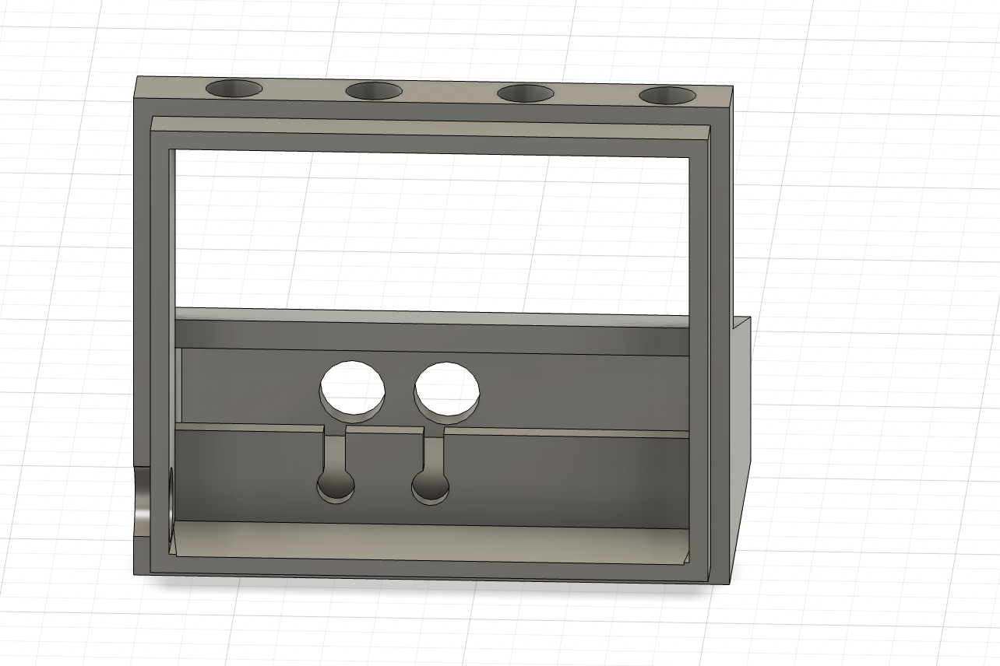

Project 3!
It's Time To Wake Up!
my journey through making and designing an alarm clock
Yay! I was super excited about this Project because I wanted to really be able to just jumping into to designing something. I worked on this project with my classmate, Alexandra Ladjeva! The first part was building the clock, then designing and printing 2 versions of a 3d printed casing, then doing the same but as a laser-printed version! This was my process:
Making the Clock
We started the project by putting together the clock! It was given to us in all of its components and its was out responsibility to solder it together to make it into a working clock. This part was super fun because we were able to learn a new skill. At first, the soldering was very hard for me to get down but after the first ten or so, I found my groove and was able to solder faster and with more accuracy.
Clock
Initial Sketchings
After we built the clock, we had to design what a casing may look like. One of the challenges was the buttons. The actual button was hard to access as it is small and would be hard and uncomfortable for a finger to reach into the clock. I thought it would be cool to try to figure out a way to use buttons! I was warned by Penny (The TA), who is a known dis-believer, that this plan may be too ambitious, but I was determined to figure out a way!
Initially, I wanted to find a mechanism to maybe have the buttons facing upwards, and shift the force in a forward motion
After realizing that would be crazy, I went with the forwards button approach
3D Printing
The Fusion process was quite fun! Getting the measurements and fiddling with certain tools made me very familiar with the program. I really enjoyed just exploring, getting an idea of something, then being able to do it.
1st Fusion Rendition
1st 3D Print!
Sadly, even though it looked pretty cool, there were a few problems with the print design.
The Problems:
Hole for cord not big enough.
Buttons just a hair off.
Problem Fixing: 3D Print #2
After seeing these issues, I went back to Fusion to fix these problems! The button placement was probably the toughest part, making sure it was fully correct this time.
Still a teensy small, but a good fit overall!

Buttons were spot on! But a tiny bit short, so
I glued a little piece of plastic to either ends.
Final 3D Print!

Yay!!!!
Laser Cutting
I was so happy with how the 3D print turned out! Looking forward to using another medium to do the same thing, me and Allie talked about any differences/changes to make for shifting the design to Laser Cutting. After talking about it, we both felt confident in using the same design!
This was the initial design including it in its individual peices.
The Button was 4 peices glued together to create the blocking mechanism and make the button long enough.
We Cut! Everything was clicking together very nicely, the clock fit well, and then we realized a slight problem with the design.
Problem Fixing: Laser Cut
THe first cut had no hole for the cord!
I designed a cut to do with the hole, but
instead we had the help of professor Krones to drill a hole!
The Final Laser-cut Product!